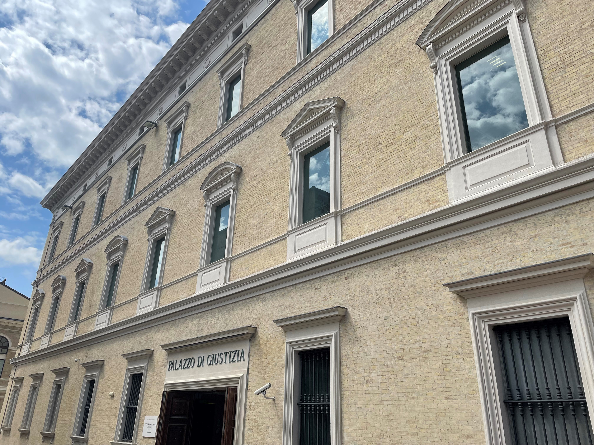
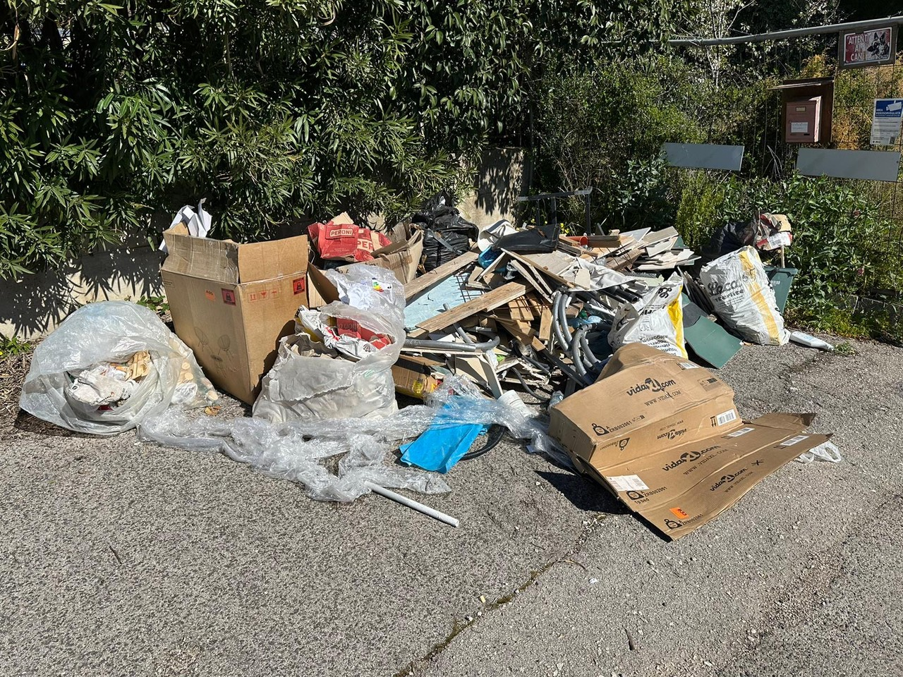

Progetto "Il Processo Penale - Educazione alla Legalità"

Nel corso dell'anno abbiamo partecipato al progetto dell'Unione delle Camere Penali Italiane, dedicato all'educazione alla legalità e ai principi costituzionali del processo penale.
Il percorso si è concluso con la partecipazione a un'udienza reale presso il Tribunale di Ancona, durante la quale abbiamo assistito a tre casi distinti, ognuno in una fase diversa del procedimento penale.
L'imputazione riguardava l'art. 388 del Codice Penale: mancata esecuzione
di un provvedimento del giudice.
I destinatari di un ordine di pignoramento di un veicolo,
un'Audi, non avevano consegnato l'auto nei 10 giorni previsti dal provvedimento.
La pena prevista va dalla reclusione fino a 3 anni oppure una multa da 103 a 1032 euro.
Durante l'udienza abbiamo assistito alla fase del dibattimento: il giudice
conosce già i fatti dalle indagini preliminari, ma la prova vera e propria si forma solo
in dibattimento, dove le persone informate sui fatti diventano testimoni a tutti gli effetti.
Questo meccanismo è una garanzia fondamentale per l'imputato, che ha sempre diritto
a contraddire le accuse in aula.
Sia la persona che aveva sporto querela sia l'imputato erano assenti per legittimo
impedimento.
I difensori hanno rifiutato di sostituire la testimonianza con i soli atti
della querela, e il giudice ha quindi rinviato l'udienza al 27 novembre per ascoltare i testi.
Al termine dell'udienza il giudice ha colto l'occasione per spiegarci due procedure alternative al dibattimento ordinario:

Questo è stato il caso più articolato a cui abbiamo assistito.
L'imputazione, basata sull'art. 256 del D.Lgs. 152/2006, riguardava
la gestione non autorizzata di rifiuti: l'amministratore di fatto di un'impresa edile,
Bruno Crucianelli, era accusato di aver creato una discarica abusiva di materiali
da costruzione in località Rustico, nel comune di Polverigi (AN).
La pena prevista va dall'arresto da 3 mesi a 1 anno oppure un'ammenda da 2.600 a 26.000 euro.
L'imputato non si è presentato e non ha voluto sottoporsi a interrogatorio.
Sono stati sentiti tre testimoni nel corso dell'udienza:
L'udienza si è chiusa senza la chiusura dell'istruttoria, per consentire la produzione
di ulteriori documenti.
La discussione è stata rinviata al 30 ottobre 2026.
Il terzo caso, quello che mi ha interessato di più visto il mio percorso di studi,
riguardava l'art. 640 ter del Codice Penale: frode informatica.
L'imputato si sarebbe finto un agente bancario per farsi accreditare ingiustamente
2.450 euro su una carta Intesa San Paolo.
La pena prevista va da 6 mesi a 3 anni di reclusione, più una multa da 50 a 516 euro.
Era presente solo l'avvocato d'ufficio.
Il giudice ha disposto il rinvio a una
successiva udienza, fissata per il 27 novembre, per ascoltare i testimoni
e acquisire la documentazione necessaria.
Quello che mi ha colpito di più è stata la differenza tra come immaginavo un processo, basandomi su film e serie TV, e la realtà osservata in aula: un'udienza fatta soprattutto di lettura di atti, rinvii e questioni procedurali, molto diversa dai dibattimenti rapidi e drammatici della fiction.
Il secondo caso, quello ambientale, mi ha fatto capire quanto sia complesso ricostruire
la verità processuale: tre testimoni tecnici, analisi di laboratorio, documenti datati
in modo strategico dalla difesa.
Se fossi stato io il giudice, avrei dato più peso
alla testimonianza del Maresciallo Chavez e alla discrepanza temporale evidenziata
dal PM sulla richiesta di bonifica: un documento del 2024 non può giustificare fatti
del 2023.
Il terzo caso, sulla frode informatica, mi ha colpito particolarmente per la vicinanza al mio campo di studi: vedere come un reato che riguarda la sicurezza digitale venga trattato concretamente in tribunale mi ha fatto riflettere su quanto sia importante, anche nel mio futuro professionale, capire le implicazioni legali e non solo tecniche della cybersicurezza.
In generale, questa esperienza mi ha fatto riflettere sul rapporto tra rispetto delle regole ed essere cittadini consapevoli: il processo penale non è solo un meccanismo punitivo, ma un sistema di garanzie costruito per proteggere chiunque, accusato o vittima che sia, dal rischio di decisioni affrettate o ingiuste.